Qwen3-4B DSpark 训练消融
实验设置
以冻结的 Qwen3-4B 为 target，训练五层 DSpark draft，token embedding 与 LM head 保持冻结。训练消融采用 offline training，预先缓存 target hidden states；生成评测另列 online training 模型。
| 项目 | 设置 |
|---|---|
| 训练数据 | Open PerfectBlend；经目标模型重新生成回复并缓存特征，共 1,339,875 个样本 |
| Regen 采样 | Non-thinking；temperature 0.7，top-p 0.8，top-k 20，min-p 0；每次回复最多生成 4096 tokens（不含 prompt） |
| 最大序列长度 | 4096 tokens（完整对话，含 prompt 与 response） |
| Draft 架构 | 5 层；隐藏维度 2560；FFN 中间维度 9728；GQA：32 个 Q heads、8 个 KV heads，head dim 128 |
| Aux 层 | [1, 9, 17, 25, 33] |
| Block size | 7；Backbone 输入为 [anchor, MASK × 6] |
| Anchor 采样 | 每个样本最多 512 个 |
| 监督 | 仅监督 response |
| Markov head | Vanilla，rank 256 |
| Batch size | 4 GPUs × micro-batch 1 × 梯度累积 128；global batch 512 |
| 学习率 | 峰值 \(6\times10^{-4}\)；warmup 比例 0.04；完整计划为 26,160 步 |
| Loss | \(0.1L_{\mathrm{CE}}+0.9L_{\mathrm{L1}}+L_{\mathrm{conf}}\)；位置权重为 \(\exp(-i/4)\)，\(i=0,\ldots,6\) |
| 训练步数 | 2,616 optimizer step，约一个 epoch |
| 总参数量 | GQA baseline：1,393,133,569（约 1.393B；含冻结的 embedding 与 LM head，不含 target backbone） |
| 可训练参数量 | GQA baseline：615,221,249（约 615.2M） |
指标
设 \(p_i\)、\(q_i\) 分别为第 \(i\) 个位置的 target 与 draft 分布。概率采样的接受率为
训练指标 \(\tau\) 由各位置接受率的前缀乘积计算，包含一个 bonus token：
消融条件
以下训练消融均以 GQA baseline 为对照，各改一项；SWA 以 MLA 为对照。
\(\blacksquare\)Tau loss. 附加
系数 0.1。CE 与 L1 仍按位置衰减，该项不衰减。
\(\blacksquare\)MLA. 将 backbone attention 替换为 MLA。32 个 query heads，每头 QK 为 64 content + 64 RoPE，V 为 128，KV latent 为 512。
\(\blacksquare\)SWA. 在 MLA 上将历史窗口限制为 \(W\in\{1024,512,128\}\)。对位置为 \(a\) 的 anchor，历史范围固定为 \([\max(0,a-W+1),a)\)，块内仍双向可见。
\(\blacksquare\)Context-only. 移除当前 draft block 的 K/V，只读取早于 anchor 的 target context，保留 anchor 输入。
\(\blacksquare\)All-mask. 将 backbone 输入改为 [MASK × 7]，保留块内双向 attention。Markov head 仍从 anchor token 开始生成。
\(\blacksquare\)三层 aux. 将 target 特征层改为 [1, 17, 33]。
结果总览
| 实验 | CE ↓ | L1 ↓ | Acc. ↑ | τ ↑ | Δτ |
|---|---|---|---|---|---|
| GQA baseline | 1.1191 | 0.4550 | 74.35% | 4.9591 | 0.00% |
| GQA baseline（2.3 epoch） | 0.8744 | 0.3721 | — | 5.3611 | +8.11% |
| GQA + tau loss | 1.1260 | 0.4546 | 74.34% | 4.9860 | +0.54% |
| MLA | 1.1402 | 0.4623 | 74.00% | 4.9368 | -0.45% |
| MLA + SWA1024 | 1.1571 | 0.4690 | 73.65% | 4.9008 | -1.17% |
| MLA + SWA512 | 1.1853 | 0.4787 | 73.16% | 4.8523 | -2.15% |
| MLA + SWA128 | 1.2830 | 0.5140 | 71.35% | 4.6668 | -5.89% |
| GQA context-only | 1.1795 | 0.4767 | 73.30% | 4.8718 | -1.76% |
| GQA all-mask | 1.1860 | 0.4780 | 73.51% | 4.8791 | -1.61% |
| GQA 三层 aux | 1.1676 | 0.4735 | 73.36% | 4.8837 | -1.52% |
训练消融分析
Tau loss
Tau loss 使 \(\tau\) 提高 0.54%，收益主要出现在后续位置和训练中后期。
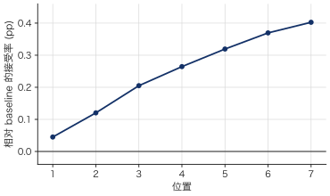
MLA 与历史窗口
MLA 的可训练参数从 615.2M 降至 612.1M，\(\tau\) 下降 0.45%，差距未随 draft 位置明显扩大。
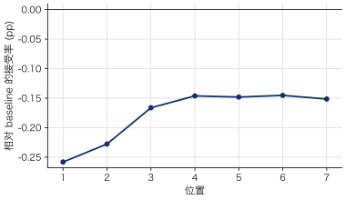
MLA 的压缩表示每层每 token 包含 \(512+64=576\) 个数，约为 GQA 的 \(1/3.6\)。当前实现缓存展开后的 K/V，这一比例不代表实际 KV cache 的节省。
进一步缩短历史窗口会降低接受长度，窗口越小损失越大。SWA128 相对 MLA 的 \(\tau\) 下降 5.47%，且差距在训练早期已出现。块内双向 attention 无法完全补偿历史信息的减少。
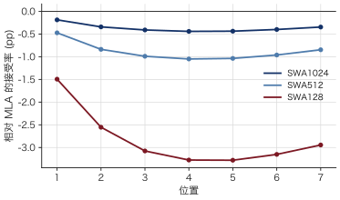
Anchor 输入与块内 K/V
Context-only 和 all-mask 的 \(\tau\) 分别下降 1.76% 和 1.61%，但影响的位置不同：移除块内 K/V 主要影响后续位置，移除 anchor 输入主要影响首位置。两组均保留 Markov head 的前驱 token 输入。
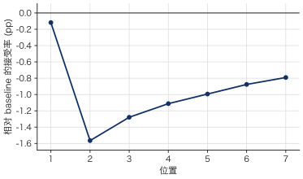
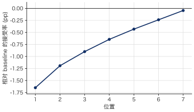
三层 aux
减少特征层使输入投影参数从 32.77M 降至 19.66M，总可训练参数减少 2.13%，代价是 \(\tau\) 下降 1.52%，后续位置受影响更大。
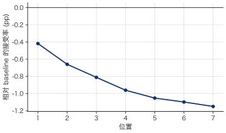
延长训练
同一 GQA 配置训练至约 2.3 epoch，\(\tau\) 提高 8.11%，后续位置改善更大。这一收益明显高于本组实验中的 tau loss。统计区间为 5820–6010 步。
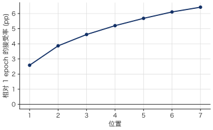
训练过程曲线
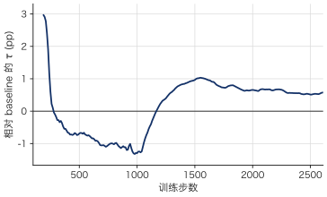
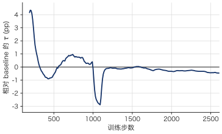
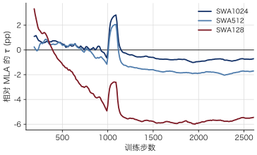
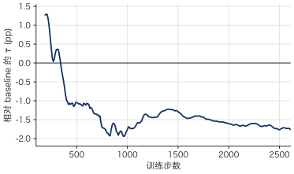
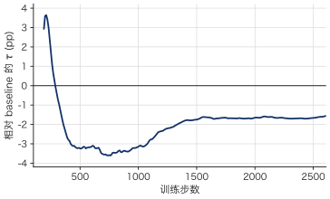
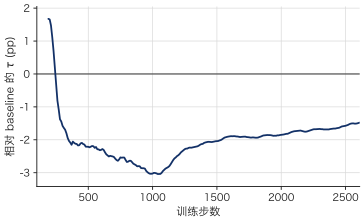
GSM8K 生成评测
生成评测使用 GSM8K test 全集 1,319 题，target 为 Qwen3-4B，采用 non-thinking 模式，每轮提出 7 个 draft tokens。MAL 为实测平均接受长度，按 1 + accepted / rounds 计算，包含 bonus token；MOL 为平均输出 tokens/题；pos-i 为前 i 个 draft tokens 全部被接受的比例。
评测协议与 shot 数对比
使用官方权重 deepseek-ai/dspark_qwen3_4b_block7，比较 prompt 协议与 shot 数。采样设置如下：
| 项目 | 设置 |
|---|---|
| Target | Qwen3-4B；non-thinking |
| Target 采样 | temperature 1、top-p 1、top-k -1、min-p 0 |
| Draft 采样 | Probabilistic；每轮 7 个 draft tokens |
Prompt 与复现设置
DeepSpec 用户 prompt 为：
自有评测脚本（vLLM 协议）的 0-shot 用户 prompt 为：
5-shot 在测试题之前加入五个示例问答，沿用 Question: ...\nAnswer: ... 格式。
DeepSpec 评测的输出上限为 2048 tokens，并发数为 32，seed 从 980406 开始逐题递增。
| 评测协议 | MAL | pos-1 | pos-2 | pos-3 | pos-4 | pos-5 | pos-6 | pos-7 | MOL |
|---|---|---|---|---|---|---|---|---|---|
| DeepSpec 0-shot | 6.1305 | 93.25% | 86.04% | 79.01% | 72.63% | 66.44% | 60.60% | 55.08% | 305.63 |
| vLLM 0-shot | 6.1511 | 93.63% | 86.72% | 79.56% | 73.08% | 66.52% | 60.68% | 54.92% | 248.38 |
| vLLM 5-shot | 5.1025 | 88.73% | 78.02% | 67.69% | 57.29% | 47.69% | 39.33% | 31.51% | 143.73 |
两种 0-shot 协议的 MAL 接近，但输出长度不同。加入 5-shot 后，输出更短，MAL 下降约 17%。后续对比统一采用 vLLM 0-shot 协议。
接受率 vs. 采样参数
T 表示 target temperature，Top-p、Top-k 为 target 截断参数，min-p 固定为 0。Probabilistic draft 使用相同温度，但不做 top-p/top-k 截断；greedy draft 取最大概率 token。T=0 时两者均采用 greedy。
官方权重
使用 deepseek-ai/dspark_qwen3_4b_block7。
| T | Top-p | Top-k | Draft 采样 | MAL | pos-1 | pos-2 | pos-3 | pos-4 | pos-5 | pos-6 | pos-7 | MOL |
|---|---|---|---|---|---|---|---|---|---|---|---|---|
| 1.0 | 1.0 | -1 | probabilistic | 6.1511 | 93.63% | 86.72% | 79.56% | 73.08% | 66.52% | 60.68% | 54.92% | 248.38 |
| 1.0 | 1.0 | -1 | greedy | 5.8528 | 90.82% | 82.53% | 74.72% | 68.03% | 61.80% | 56.39% | 51.00% | 247.51 |
| 0.7 | 0.8 | 20 | probabilistic | 6.2480 | 93.65% | 87.11% | 80.51% | 74.49% | 68.52% | 63.03% | 57.49% | 247.77 |
| 0.7 | 0.8 | 20 | greedy | 6.2437 | 93.43% | 86.86% | 80.05% | 74.34% | 68.54% | 63.24% | 57.91% | 251.56 |
| 0.0 | 1.0 | -1 | greedy | 6.3085 | 94.02% | 87.69% | 81.16% | 75.44% | 69.54% | 64.18% | 58.82% | 248.44 |
在 T=0.7、top-p=0.8、top-k=20 时，两种 draft 采样方式的 MAL 接近。T=1、无截断时，probabilistic 比 greedy 提高约 5.1%，而输出长度接近。Draft 采样方式的收益取决于 target 的采样设置。
Backbone MLA + Markov MLA
该变体将 backbone attention 替换为 MLA，并在原有 Markov head 的 W₁ → W₂ 之间加入 MLA。Backbone 并行计算各位置的基础 logits，Markov head 则根据上一个生成 token 和 target context，逐步修正 logits 并采样。

五层 target features 按 token 拼接，经 FC 和 RMSNorm 融合为 \(C\)。Markov MLA 的 Q 来自上一个 token 的 embedding \(z_i=W_1[x_{i-1}]\)，K/V 由 \(C\) 投影得到。以本轮起始 token \(x_0\) 为边界，所有生成步骤都读取同一段早于 \(x_0\) 的 context：
其中 \(\ell_i^0\) 为 backbone 的基础 logits，\(b_i\) 为 Markov 修正项。Markov MLA 不加残差，其投影权重与 backbone 独立。
Baseline 与该变体均采用 online training，训练 1 epoch。客户端并发数与服务端最大请求数均为 32。
| T | Top-p | Top-k | Draft 采样 | 模型 | MAL | pos-1 | pos-2 | pos-3 | pos-4 | pos-5 | pos-6 | pos-7 | MOL |
|---|---|---|---|---|---|---|---|---|---|---|---|---|---|
| 0.7 | 0.8 | 20 | probabilistic | Baseline | 5.5296 | 90.66% | 80.98% | 71.91% | 63.88% | 55.85% | 48.38% | 41.32% | 245.48 |
| 0.7 | 0.8 | 20 | probabilistic | Markov MLA | 5.5191 | 90.11% | 80.34% | 71.45% | 63.58% | 55.78% | 48.67% | 41.99% | 246.44 |
| 0.7 | 0.8 | 20 | greedy | Baseline | 5.5286 | 90.15% | 80.46% | 71.62% | 63.67% | 55.85% | 48.84% | 42.27% | 247.83 |
| 0.7 | 0.8 | 20 | greedy | Markov MLA | 5.5041 | 89.79% | 79.81% | 70.92% | 63.17% | 55.67% | 48.76% | 42.30% | 246.93 |
| 1.0 | 1.0 | -1 | probabilistic | Baseline | 5.3181 | 89.75% | 79.12% | 69.09% | 60.25% | 51.88% | 44.34% | 37.36% | 249.02 |
| 1.0 | 1.0 | -1 | probabilistic | Markov MLA | 5.3552 | 89.37% | 78.82% | 69.21% | 60.69% | 52.76% | 45.70% | 38.98% | 247.19 |
| 1.0 | 1.0 | -1 | greedy | Baseline | 5.2065 | 87.52% | 76.22% | 66.42% | 58.17% | 50.62% | 44.03% | 37.68% | 249.29 |
| 1.0 | 1.0 | -1 | greedy | Markov MLA | 5.2404 | 87.78% | 76.47% | 66.93% | 58.78% | 51.21% | 44.56% | 38.32% | 246.08 |
| 0.0 | 1.0 | -1 | greedy | Baseline | 5.6057 | 90.94% | 81.60% | 72.69% | 64.87% | 57.19% | 50.05% | 43.24% | 252.05 |
| 0.0 | 1.0 | -1 | greedy | Markov MLA | 5.6015 | 90.49% | 81.18% | 72.38% | 64.56% | 57.24% | 50.39% | 43.91% | 251.15 |
各设置下，两组 MAL 的差异均不足 1%。T=1 时 Markov MLA 略高，其余设置接近或略低，尚未显示一致的接受长度收益。
接受率：Baseline vs. DrawSpec
DrawSpec 将五层 backbone 分为四层预计算和一层条件化，最后一层输入为 anchor + 6 states。此处使用 late-conditioning 分支的 12-state 权重，与 baseline 均训练约 1 epoch，target temperature 为 0.7。
| 模型 | MAL | pos-1 | pos-2 | pos-3 | pos-4 | pos-5 | pos-6 | pos-7 | MOL |
|---|---|---|---|---|---|---|---|---|---|
| Baseline | 5.5271 | 90.67% | 81.04% | 71.74% | 63.77% | 55.84% | 48.34% | 41.32% | 247.98 |
| DrawSpec | 4.7163 | 85.80% | 70.82% | 59.19% | 49.87% | 41.73% | 35.07% | 29.14% | 248.58 |
两组输出长度接近，DrawSpec 的 MAL 下降约 14.7%。
历史评测
早期 online / offline 评测记录
Online training 与官方权重
在 vLLM 服务上评测 GSM8K test 全集 1,319 题。自训练 baseline 训练至 step 2616（约 1 epoch）。Prompt 使用 Question: {question}\nAnswer: 格式。Target 使用 non-thinking，采样参数为 temperature=0.7、top-p=0.8、top-k=20、min-p=0；Draft 均采用 greedy，每轮提出 7 个 draft tokens。
| 权重 | 峰值学习率 | MAL | pos-1 | pos-2 | pos-3 | pos-4 | pos-5 | pos-6 | pos-7 |
|---|---|---|---|---|---|---|---|---|---|
| 自训练 Online | \(3\times10^{-4}\) | 4.3013 | 85.29% | 70.73% | 56.23% | 42.57% | 32.30% | 24.66% | 18.34% |
| 官方权重 | — | 5.1804 | 89.00% | 78.72% | 68.65% | 58.42% | 49.22% | 40.80% | 33.21% |
Offline training（5-shot）
| 权重 | 峰值学习率 | MAL | pos-1 | pos-2 | pos-3 | pos-4 | pos-5 | pos-6 | pos-7 |
|---|---|---|---|---|---|---|---|---|---|
| 自训练 Offline | \(6\times10^{-4}\) | 4.5908 | 86.33% | 73.03% | 60.17% | 48.10% | 38.23% | 29.82% | 23.40% |